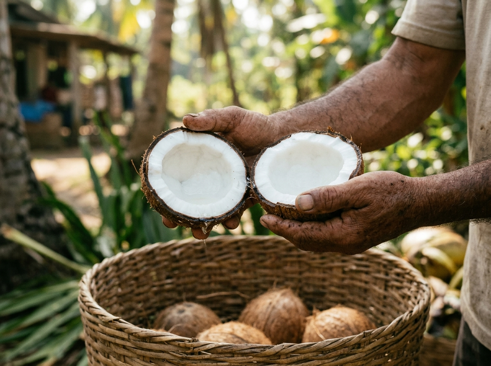
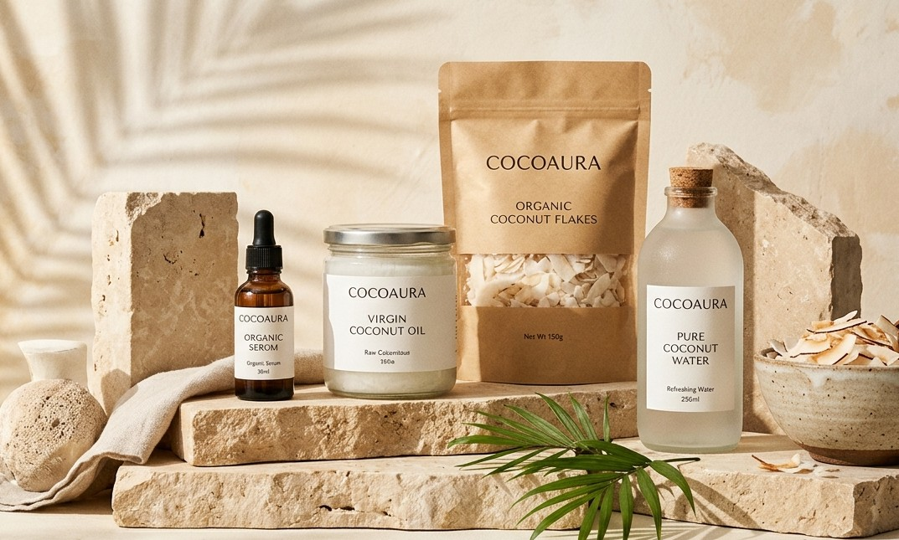
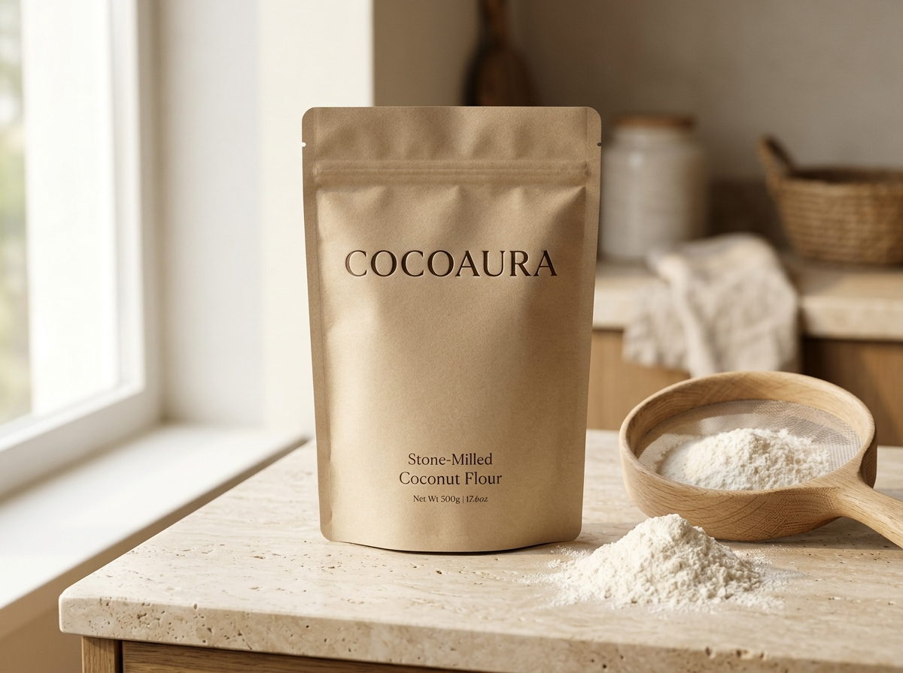
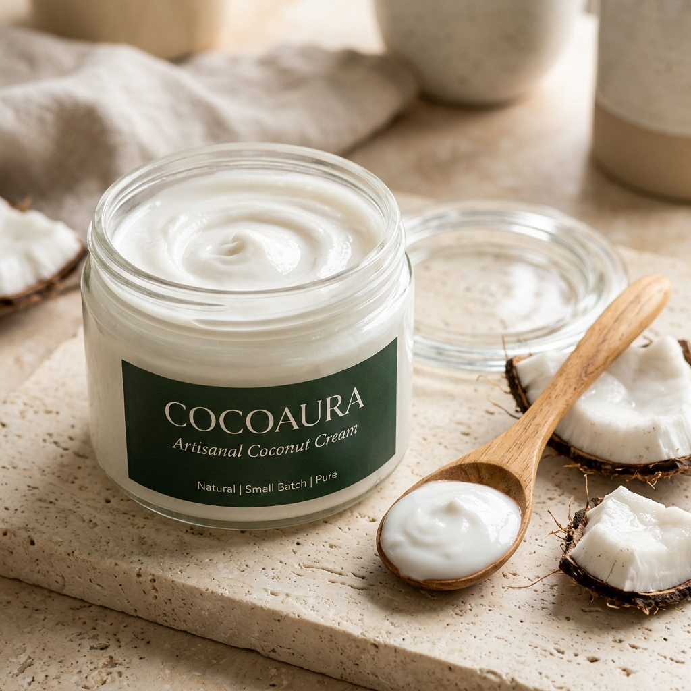

The Science of Tender Coconut Water: Nature's Ultimate Isotonic Drink
Why green tender coconuts at the 7-month mark contain the optimal balance of potassium, magnesium, and natural enzymes to out-hydrate commercial sports drinks.
A chronicle of daily grove plucking, live cold-pressing techniques, natural electrolyte science, and tropical wellness living.
Deep dives into live cold-pressing techniques, orchard nutrition, and zero-sugar hydration lifestyles.
Why green tender coconuts at the 7-month mark contain the optimal balance of potassium, magnesium, and natural enzymes to out-hydrate commercial sports drinks.
How crushing fresh peeled sugarcane through chilled stainless steel rollers preserves live digestive enzymes, iron, and a refreshing sustained energy boost.
Follow our daily morning logistics dispatch connecting generational coastal coconut groves directly to our neighborhood counter for uncompromised freshness.

Discover our stall secret for blending fresh garden mint, key lime wheels, crushed ice, and raw tender coconut water into a revitalizing summer mocktail.
The truth about store-bought shelf-stable concentrates versus unpasteurized, chilled raw tender coconut water bottled directly at our stall counter.
How blending fresh scooped coconut meat with sweet coconut water and roasted pistachios creates the most decadent, 100% natural dessert shake in town.
When to drink what: aligning natural plant waters with your body's metabolic clock.

Wakes up cellular hydration, gently flushes the kidneys, and restores optimal blood alkalinity after overnight fasting.

Live raw cane glucose bonded with natural iron and digestive enzymes delivers clear mental alertness without caffeine jitters.

Beetroot nitrates and apple pectin stimulate natural hepatic detox pathways, banishing the dreaded 3 PM afternoon fatigue slump.

Rich in potassium and nourishing plant MCT fats to soothe muscles, replenish glycogen stores, and promote peaceful sleep.
Click on any question below to expand detailed stall answers regarding hydration, shelf life, and nutrition.
Because our coconut water is 100% raw with zero thermal pasteurization or chemical preservatives, it should be consumed within 2 hours at ambient room temperature, or kept refrigerated at 2°C–4°C and finished within 48 hours. Once decapped, live enzymes begin interacting with ambient air, so cold storage is essential to preserve sweetness and micronutrients.
Raw sugarcane contains active polyphenol oxidase enzymes that react with oxygen—just like a freshly sliced apple. This natural enzymatic oxidation turns frothy jade-green juice amber within 30 minutes. That's why we crush stalks live to order and squeeze fresh key lime, whose natural Vitamin C acts as an immediate antioxidant shield while enhancing flavor.
They are the exact same botanical fruit at different life stages! Green tender coconuts are harvested young (around 7 months) for maximum clear electrolyte water (350ml–500ml) and paper-thin, spoonable malai. Brown hairy supermarket coconuts are fully mature (12+ months), where the water has naturally absorbed into thick, dense, oily copra used for grated coconut and oil extraction.
Yes! Tender coconut water is naturally isotonic, with an osmolarity profile closely matching human blood plasma. It contains more bioavailable potassium than two bananas, alongside magnesium, calcium, and sodium without synthetic dyes or added refined sugars found in commercial sports drinks.
Absolutely! Our live stall catering setup offers precision food-safe laser branding and thermal gold foil monograms on whole green coconuts with couple initials, wedding hashtags, or corporate logos. Inquire via our event desk at least 72 hours before your event date.
Download our curated 28-page digital guide featuring 12 live counter mocktail recipes, optimum post-run electrolyte replacement guidelines, and chef secrets for tender coconut malai desserts.
Over 4,200 neighborhood runners, event hosts, and wellness seekers have unlocked our counter secrets.